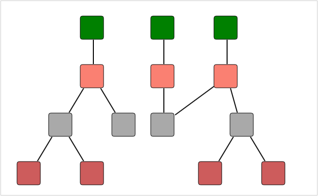

The hierarchical tree layout arranges nodes in a tree-like structure, where the nodes in the hierarchical layout may have multiple parents. As a result, there is no need to specify the layout root.
Orientation
The layout manager lets you orient the hierarchical tree in many directions. The Orientation property of the Diagram model can be used to specify the tree orientation.
· TopBottom—Places the root node at the top and the child nodes are arranged below the root node.
· BottomTop—Places the root node at the bottom and the child nodes are arranged above the root node.
· LeftRight—Places the root node at the left and the child nodes are arranged on the right side of the root node.
· RightLeft—Places the root node at the right and the child nodes are arranged on the left side of the root node.
|
Property |
Description |
Type |
Data Type |
Reference Links |
|
VerticalSpacing |
Gets or sets the Vertical spacing between nodes. |
Server side |
Double |
|
|
HorizontalSpacing |
Gets or sets the Horizontal spacing between nodes. |
Server side |
Double |
|
|
SpaceBetweenSubTrees |
Gets or sets the space between sub- trees. |
Server side |
Double |
|
|
Orientation |
Gets or sets the orientation. |
Server side |
Enum TreeOrientation.TopBottom TreeOrientation.BottomTop TreeOrientation.LeftRight TreeOrientation.RightLeft |
The following code snippet specifies how the hierarchical tree layout can be specified.
1. In the controller, create an object for the DiagramPropertiesModel class and set the LayoutType to HierarchicalTreeLayout.
2. Set the Orientation property and Layout spacing.
3. Pass this model class to the view data.
|
Controller DiagramPropertiesModel model = new DiagramPropertiesModel() { LayoutType = LayoutType.HierarchicalTreeLayout, Orientation = TreeOrientation.LeftRight, HorizontalSpacing = 50, VerticalSpacing = 50, RootOffsetX = 300, RootOffsetY = 50, DiagramMode = DiagramMode.SVG }; ViewData["HierarchicalTreeLayout"] = model; |
Note: If you want to create the diagram in the Canvas mode, change the DiagramMode to Canvas. By default the diagram is rendered in the SVG mode.
4. Create a view. In the view, invoke the Diagram helper with the control ID which is the same as the view data name.
|
View <%{ Html.Syncfusion().Diagram("HierarchicalTreeLayout") .Render(); } %> |
5. Build and run the application.

Figure 119: Hierarchical Layout
See Also
Layout Spacing
Refer to Concepts and Features > Diagram Model > Layout Spacing
Tree Orientation
Refer to Concepts and Features > Diagram Model > Tree Orientation